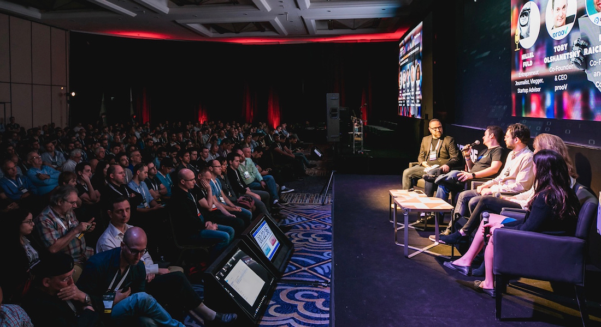
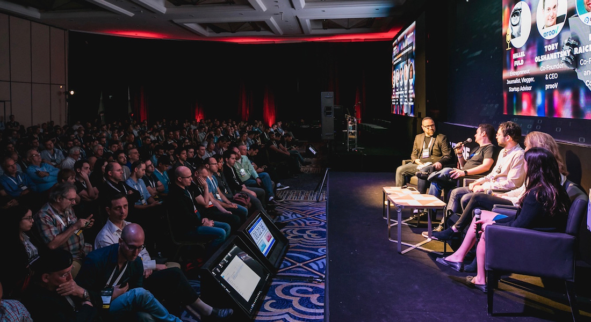
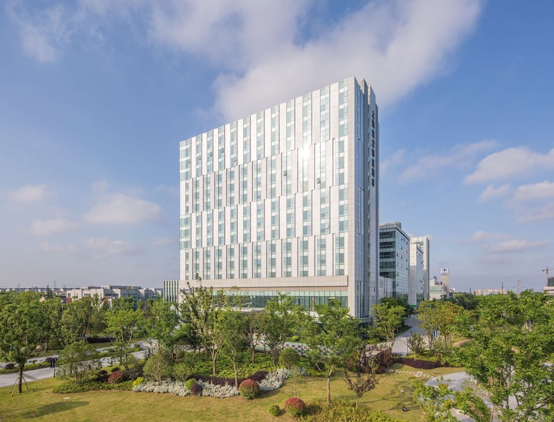

2023 International Conference
on Smart Internet of Things
Dec 16-17 2023, Shanghai, China
 


Radisson Blu Shanghai Pudong Jinqiao
With its dazzling, ultramodern skyline and storied shikumen-style lane houses, Shanghai is a city of symbolic architectural contrasts. Imbued with the spirit of Shanghai old and new, the Radisson Blu Shanghai Pudong Jinqiao serves as an alluring window into new China. Situated in the middle of Pudong, Jinqiao is in the center of finance and trade districts. Stay just 13 kilometers from the China (Shanghai) Pilot Free Trade Zone and enjoy direct links to Lujiazui, Wujiaochang, and Xujiahui. Is your family traveling with you? Our convenient hotel is just 20 kilometers from Shanghai Pudong International Airport (PVG) and 20 minutes from Shanghai Disneyland.

When you're ready to relax, go for a dip in the indoor infinity pool that looks out over the city and use our on-site sauna to unwind after a busy day of meetings. We also offer a business center, free Wi-Fi throughout the hotel, and a fitness center. Our expansive meeting space can help you impress prospective clients with professional presentations, and our high-end restaurant Shanghai Garden is the perfect place to celebrate a successful event.
Dianshan Lake
41.21 miles/66.32 km from the hotel
The largest freshwater lake in the city is also home to three golf courses and aquatic sports such as rowing, canoeing, windsurfing, and Chinese dragon boat racing.
National Exhibition and Convention Center
21.05 miles/33.87 km from the hotel
One of the world's largest exhibition, convention, and trade centers, this complex welcomes guests from all over the globe. The center is also home to several businesses.
Qingpu Museum
31.45 miles/50.61 km from the hotel
This museum celebrates Chinese heritage and local history with more than 10,000 pieces in the permanent collection.
Shanghai Grand View Garden
23.02 miles/37.05 km from the hotel
For a dose of serenity in the midst of Shanghai's bustle, visit these quiet lotus pools and gardens as you stroll through exhibits on Chinese folklore.